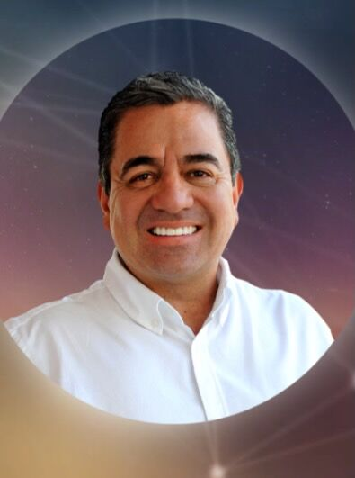
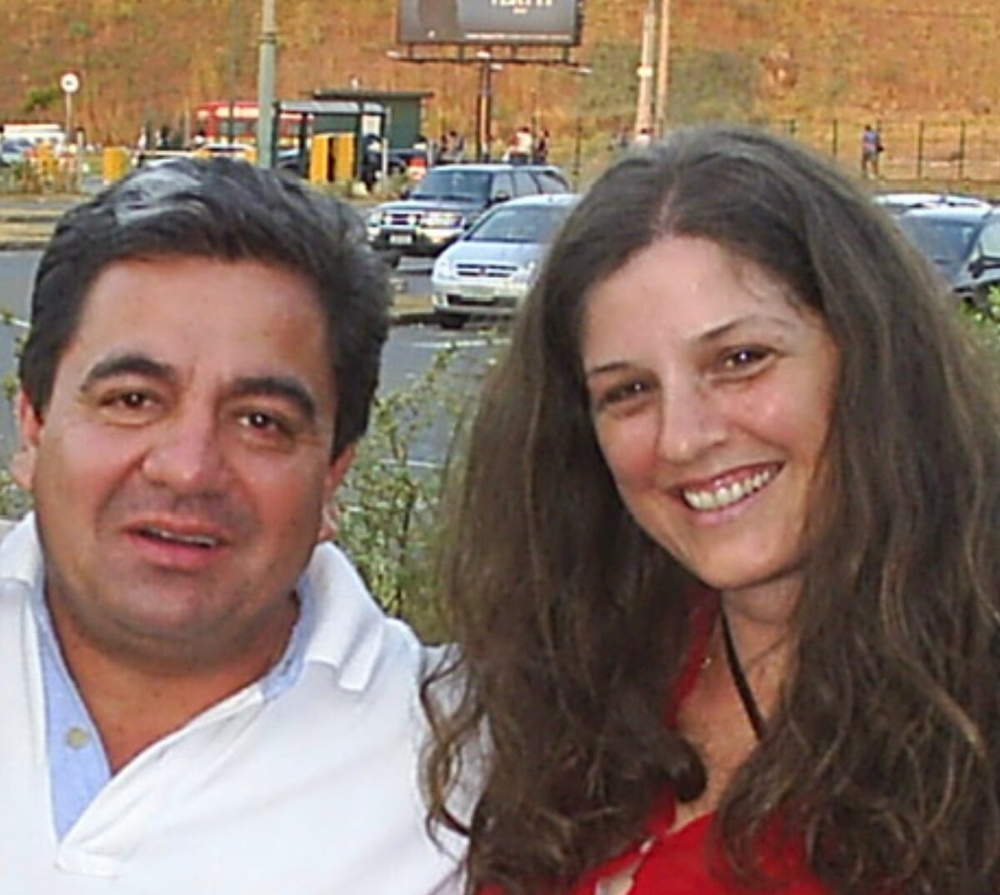
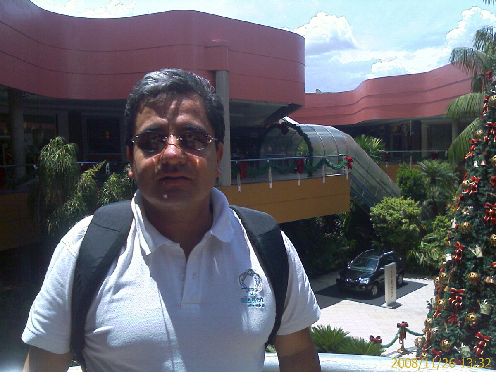
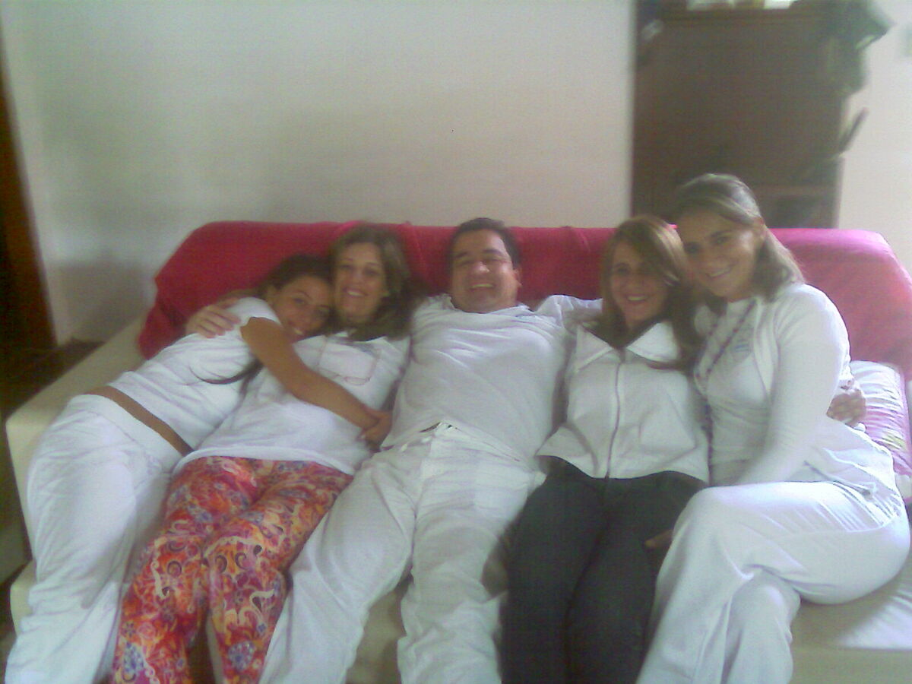
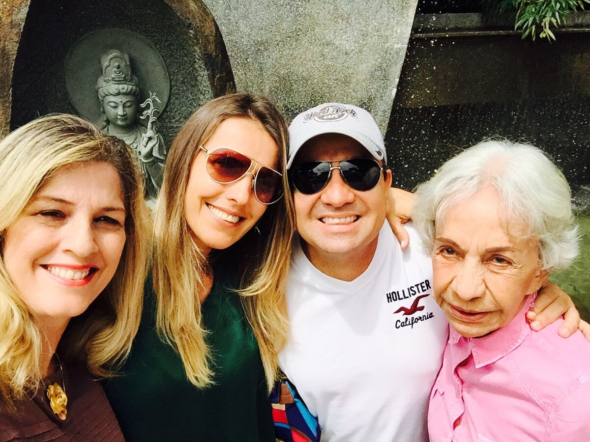
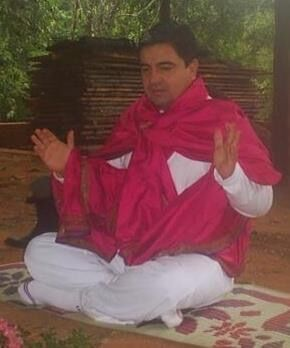
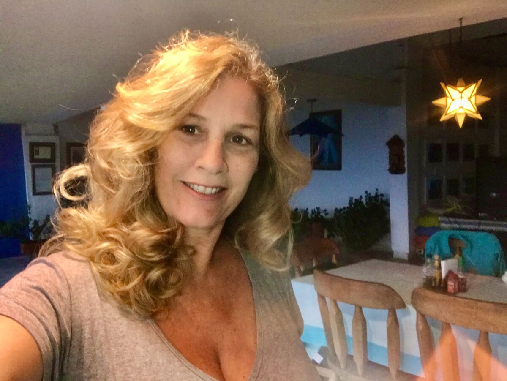
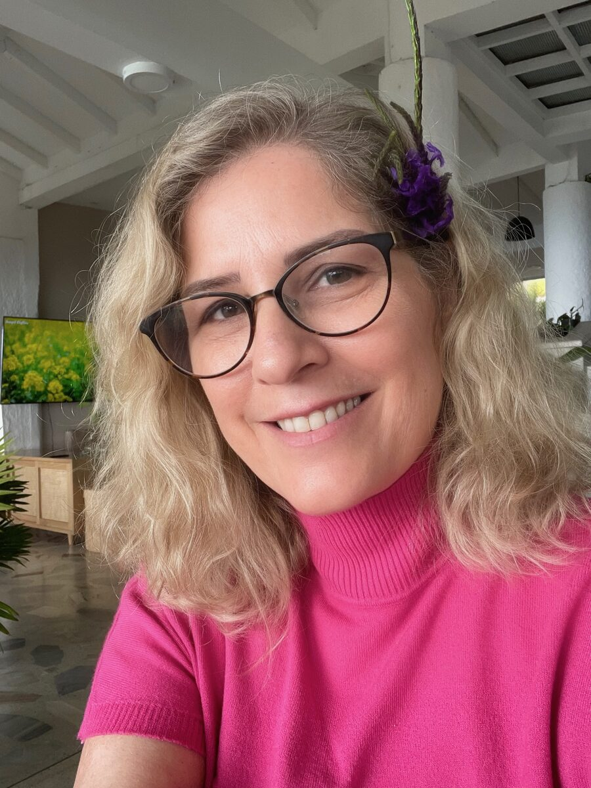
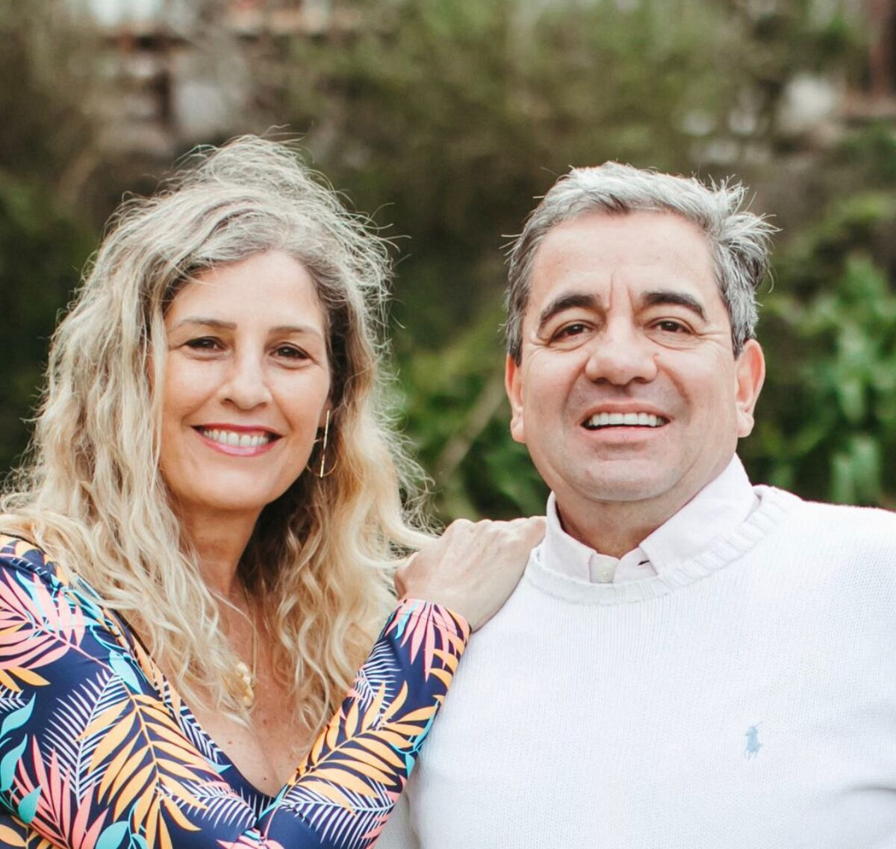
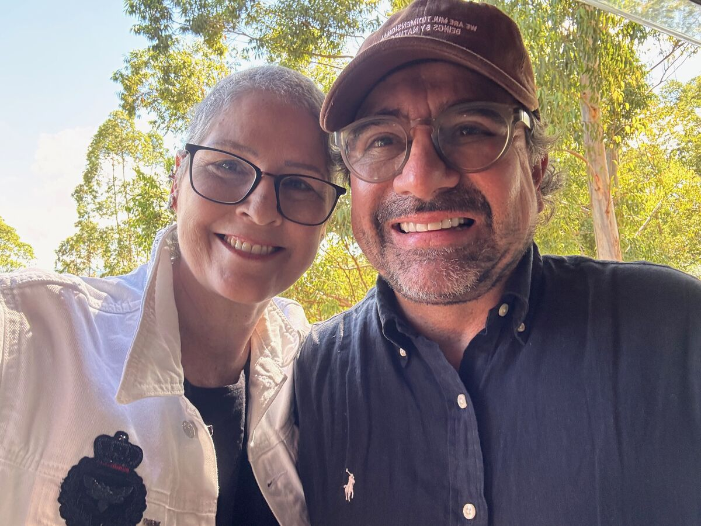

"Você é uma criatura das estrelas. Sua luz brilha diferente e o universo inteiro aguarda que você simplesmente seja."

Mestre Juan de la Luz
Em 2007, tive um sonho: um ser me abraçava, e eu podia sentir naquele abraço uma energia de amor incondicional. Dois meses depois, conheci o Mestre Juan de la Luz — e quando ele me abraçou, como faz com todos que chegam até ele, reconheci ali o mesmo abraço do meu sonho. Fiz minha iniciação, e a partir daquele momento minha vida mudou completamente. Pude me expandir a partir da minha própria essência e juntar todos os fios que antes eu não conseguia conectar.
De lá pra cá, são 19 anos de caminhada nunca interrompida ao lado do Mestre, aqui no Brasil. Um trabalho profundo comigo mesma — alinhando meu ser, depurando memórias inconscientes de dor que eu carregava sem nem saber. Camada por camada, ano após ano.
Mas esse processo nunca foi só meu. Junto com a minha própria expansão, me mantive atenta a abrir portas — em São Paulo e no interior — para que essa energia pudesse chegar e se instalar. Para que outros seres que se correspondem com essa energia divina também pudessem encontrar o caminho.
Em 2018, dei um passo mais profundo: fui morar no El Edén, Portal Dimensional, em Cali, na Colômbia, onde o Mestre vive. Foram três anos ali, trabalhando ainda mais fundo em mim mesma, em imersão total com a energia do Portal.
Voltei para São Paulo em maio de 2021 — e o caminho continuou. Sigo participando dos retiros com o Mestre Juan de la Luz aqui no Brasil, presente e ativa em cada etapa deste processo.

2007
Robertha e o Mestre Juan de la Luz.

2008
Mestre Juan de la Luz, em Campinas.

2009
Chia, Cassia, Juan, Roberta e Yamile — em Valinhos, 24/09.

2015
Roberta, Chrys, Juan e Blanquita — São Paulo.

Liberação de espaço no Vale do Matutu – MG
Mestre Juan de la Luz.

2018–2021
Robertha no El Edén, onde viveu por três anos.

2023
Robertha em retiro no El Edén, Portal Dimensional — Cali, Colômbia.
Presente e ativa em cada etapa deste processo, seguindo os retiros com o Mestre no Brasil.

